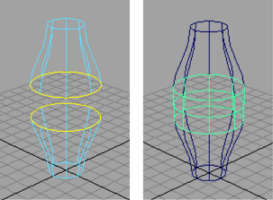

创建圆形圆角
- 选择两个相交的曲面。
- 选择“曲面 > 曲面圆角 > 圆形圆角”(Surfaces > Surface Fillet > Circular Fillet) >
 。
。 - 请执行下列任一操作：
- 使用通道盒、属性编辑器，或“显示操纵器工具”(Show Manipulator tool)来更改半径。
- 选择一个曲面，然后选择来更改在曲面的哪一侧上构建圆角。
创建自由形式圆角
- 选择每个曲面上的一条等参线或曲面上的曲线，作为圆角的开始点和结束点。
- 选择。 
- 请执行下列任一操作：
- 使用通道盒、属性编辑器，或“显示操纵器工具”(Show Manipulator tool)来编辑圆角。
- 若要操纵用于创建圆角的等参线，请选择其中一个 curveFromSurface 节点。